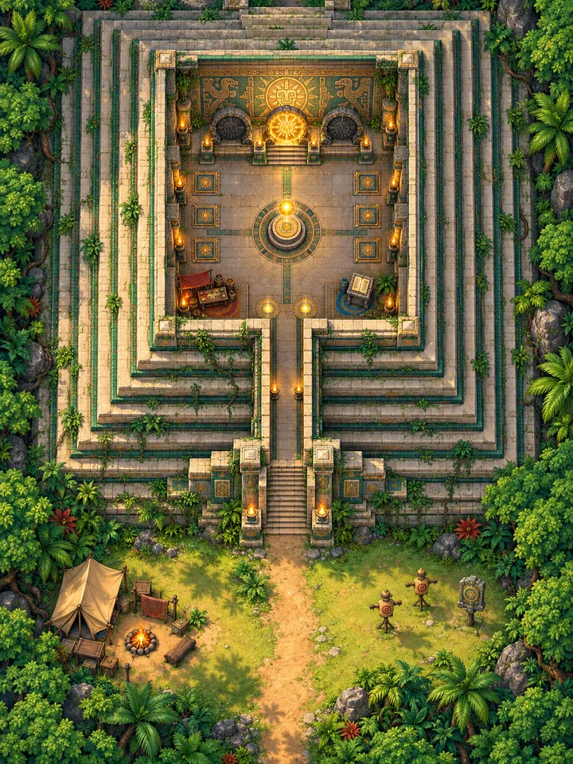
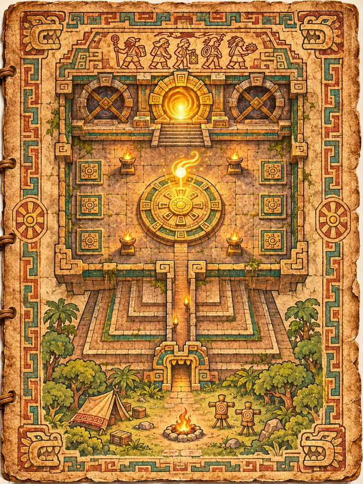

HUB06
The round altar
K'in waits above it and greets Kaya after every return, with a line that changes as the climb goes on.
Home / The Climb
The Climb
Practise, choose a mode, spend what you earned, and see how far you have come.
The Threshold is where the game lives between runs: where you practise, choose a mode, spend what you earned and see how far you have come.
This page is about how the hub plays. For its history and the clues hidden in it, see World: The Threshold.



Kaya's camp at the foot of the pyramid: tent, campfire and kettle, a map table and crates. The game starts here, and the pyramid is always in view.

Straw dummies with painted faces and a stone target. Practise every weapon here, with nothing at stake.

Two giant feathered serpents frame the tunnel into the hall, under a carved sun mask. Walking through it is the moment the game turns from outside to inside.

Three round portals stand on the dais beneath the mural. Each one is a game mode.
Middle portal · Story
The campaign, floor by floor to the summit. Open from the start.
Left portal
Sealed until Kaya reaches the summit for the first time.
Right portal
Sealed until a tier has been cleared.
HUB06
K'in waits above it and greets Kaya after every return, with a line that changes as the climb goes on.

HUB12
Three on each side wall, one per tier. Clear a tier and its pad lights, so a later run can start higher up.

HUB10
Oxlahun's shop: healing, upgrades and new gear, paid for in coins and Spirit Fragments.

HUB11
The codex and lore menu. Every codex page Kaya finds on the way up is added here.

HUB08
The progress wall. Each cleared floor lights another fragment of the temple's history.

HUB03

HUB04

A-04